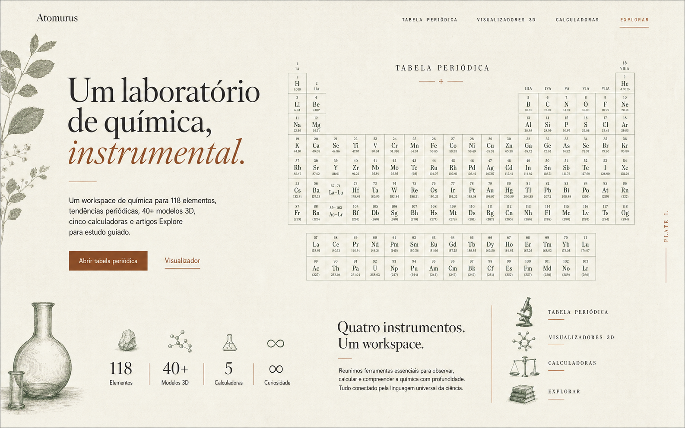
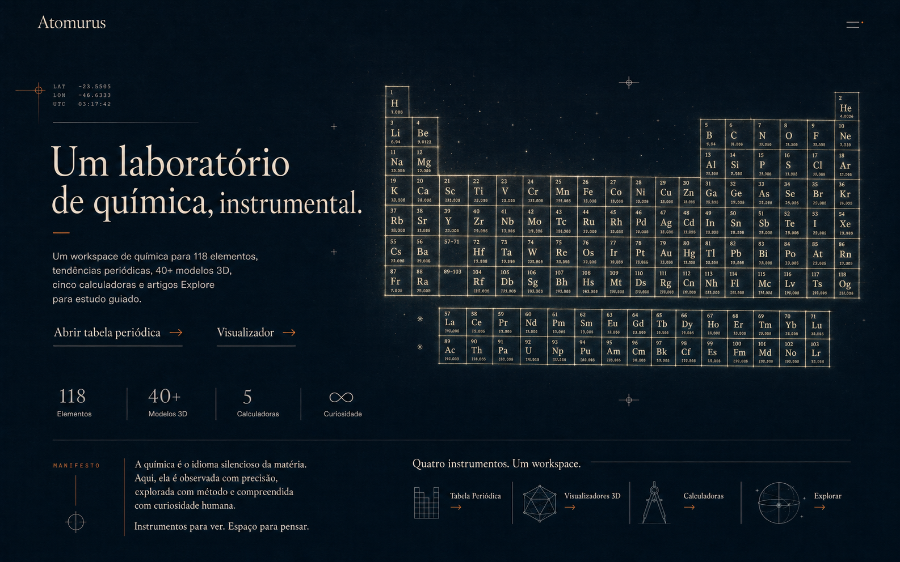
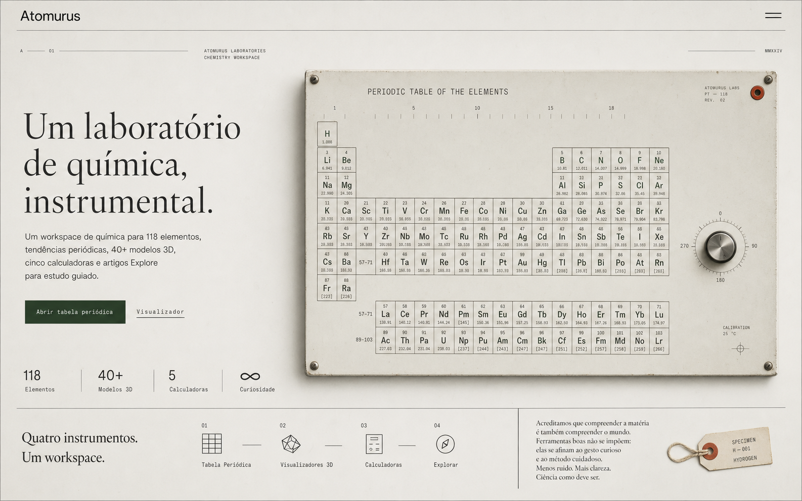

01 / Editorial
Abrir versão ↗
Caderno de Matéria
Papel mineral, catálogo científico e calor editorial.

Três variações com o mesmo conteúdo da homepage atual. A tabela periódica assume o centro da experiência; tipografia, silêncio e materialidade substituem cartões e convenções de SaaS.
Papel mineral, catálogo científico e calor editorial.

Profundidade, contemplação e dados como constelação.

Esmalte, gravação técnica e a clareza de um objeto bem construído.
